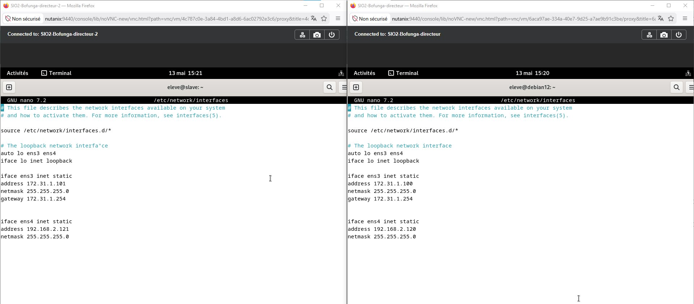
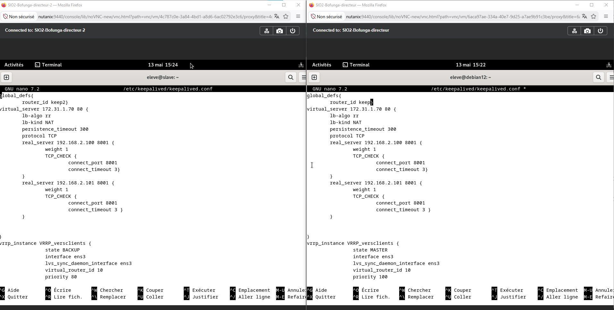
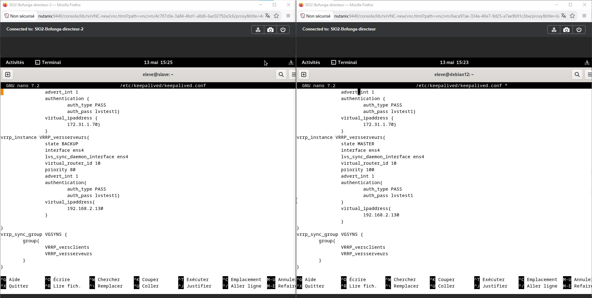

RÉALISATIONS
Active Directory — Labannu & Labannubis
Déploiement de 2 contrôleurs de domaine en réplication sur Nutanix. Configuration complète d'AD DS : unités d'organisation, comptes utilisateurs, groupes de sécurité et GPO. Basculement automatique sur DC2 en cas de panne du DC principal.
DNS Primaire & Secondaire — Haute Disponibilité
Configuration d'un serveur DNS primaire sur Labannu et d'un DNS secondaire sur Labannubis. La zone secondaire se synchronise automatiquement depuis le primaire, assurant la résolution interne même en cas de panne du DNS principal.
Serveur DHCP — Debian 12
Installation et configuration d'un serveur DHCP sous Debian 12 avec isc-dhcp-server. Définition des plages, réservations MAC, options de bail, DNS et passerelle. Validation avec attribution automatique depuis les postes clients.
Haute Disponibilité — Keepalived & LVS
Architecture haute disponibilité complète sur Nutanix : 2 directeurs LVS en MASTER/BACKUP, IP virtuelle VRRP, 2 serveurs web avec synchronisation rsync. Basculement automatique en cas de panne du nœud principal.
Architecture : Le Directeur MASTER (priorité 100) distribue les requêtes entre les 2 serveurs web via Round Robin NAT. En cas de panne, le BACKUP (priorité 80) récupère automatiquement l'IP virtuelle grâce à VRRP. Les serveurs web synchronisent leurs données via rsync pour assurer la cohérence.
Validation : Le client accède au site via 172.31.1.70 (VIP). Même après extinction du MASTER, le service reste disponible sans interruption.





Directeur MASTER → 172.31.1.100 / 192.168.2.120 (priorité 100)
Directeur BACKUP → 172.31.1.101 / 192.168.2.121 (priorité 80)
Serveur Web 1 → 192.168.2.100 : 8001
Serveur Web 2 → 192.168.2.101 : 8001
Algorithme → Round Robin NAT | TCP CHECK port 8001
Analyse de Trames & Audit Wireshark
Capture et analyse de trames réseau avec Wireshark sur un réseau simulé. Identification d'anomalies, détection de flux suspects, filtrage par protocole, et rédaction d'un rapport d'audit complet avec recommandations.
| Réalisation professionnelle | Période | Patrimoine informatique |
Incidents & demandes |
Présence en ligne |
Mode projet |
Mise à disposition |
Dev. professionnel |
|---|---|---|---|---|---|---|---|
| Active Directory — Labannu & Labannubis (DC1/DC2) | 2024–2025 | ◆ | ◆ | ◆ | |||
| DNS Primaire & Secondaire — Haute Disponibilité | 2024–2025 | ◆ | ◆ | ||||
| Serveur DHCP Debian 12 | 03/2025 | ◆ | ◆ | ||||
| Haute Disponibilité Keepalived + LVS | 11/2025 | ◆ | ◆ | ◆ | |||
| Analyse de trames & Audit Wireshark | 02/2026 | ◆ | ◆ | ◆ | |||
| Veille technologique — Cybersécurité | 10/25–04/26 | ◆ | |||||
| Conception du Portfolio E6 | 10/25–04/26 | ◆ | ◆ | ||||
| Stage 1 — Conseil IA & découverte SI | 05–06/2025 | ◆ | |||||
| Stage 2 — Proxy Squid filtrage web (Armée) | 01–02/2026 | ◆ | ◆ |